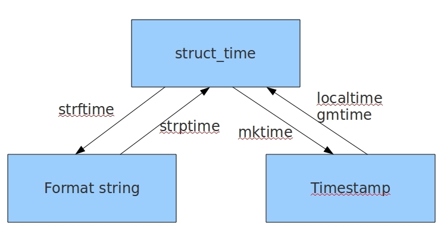
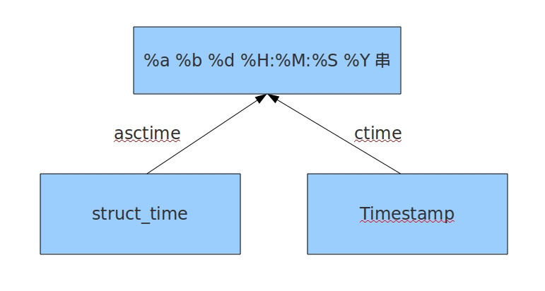

原文连接:https://www.cnblogs.com/changxin7/p/11245013.html
一，什么是模块？
常见的场景：一个模块就是一个包含了python定义和声明的文件，文件名就是模块名字加上.py的后缀。
但其实import加载的模块分为四个通用类别：
1 使用python编写的代码（.py文件）
2 已被编译为共享库或DLL的C或C++扩展
3 包好一组模块的包
4 使用C编写并链接到python解释器的内置模块
为何要使用模块？
如果你退出python解释器然后重新进入，那么你之前定义的函数或者变量都将丢失，因此我们通常将程序写到文件中以便永久保存下来，需要时就通过python test.py方式去执行，此时test.py被称为脚本script。
随着程序的发展，功能越来越多，为了方便管理，我们通常将程序分成一个个的文件，这样做程序的结构更清晰，方便管理。这时我们不仅仅可以把这些文件当做脚本去执行，还可以把他们当做模块来导入到其他的模块中，实现了功能的重复利用，
二，序列化模块。
什么叫序列化——将原本的字典、列表等内容转换成一个字符串的过程就叫做序列化。


比如，我们在python代码中计算的一个数据需要给另外一段程序使用，那我们怎么给？
现在我们能想到的方法就是存在文件里，然后另一个python程序再从文件里读出来。
但是我们都知道，对于文件来说是没有字典这个概念的，所以我们只能将数据转换成字典放到文件中。
你一定会问，将字典转换成一个字符串很简单，就是str(dic)就可以办到了，为什么我们还要学习序列化模块呢？
没错序列化的过程就是从dic 变成str(dic)的过程。现在你可以通过str(dic)，将一个名为dic的字典转换成一个字符串，
但是你要怎么把一个字符串转换成字典呢？
聪明的你肯定想到了eval()，如果我们将一个字符串类型的字典str_dic传给eval，就会得到一个返回的字典类型了。
eval()函数十分强大，但是eval是做什么的？e官方demo解释为：将字符串str当成有效的表达式来求值并返回计算结果。
ＢＵＴ！强大的函数有代价。安全性是其最大的缺点。
想象一下，如果我们从文件中读出的不是一个数据结构，而是一句"删除文件"类似的破坏性语句，那么后果实在不堪设设想。
而使用eval就要担这个风险。
所以，我们并不推荐用eval方法来进行反序列化操作(将str转换成python中的数据结构)
序列化的目的
1、以某种存储形式使自定义对象持久化；
2、将对象从一个地方传递到另一个地方。
3、使程序更具维护性。

| Python | JSON |
| dict | object |
| list, tuple | array |
| str | string |
| int, float | number |
| True | true |
| False | false |
| None | null |
2.1 json模块
Json模块提供了四个功能：dumps、dump、loads、load
import json
dic = {'k1':'v1','k2':'v2','k3':'v3'}
str_dic = json.dumps(dic) #序列化：将一个字典转换成一个字符串
print(type(str_dic),str_dic) #<class 'str'> {"k3": "v3", "k1": "v1", "k2": "v2"}
#注意，json转换完的字符串类型的字典中的字符串是由""表示的
dic2 = json.loads(str_dic) #反序列化：将一个字符串格式的字典转换成一个字典
#注意，要用json的loads功能处理的字符串类型的字典中的字符串必须由""表示
print(type(dic2),dic2) #<class 'dict'> {'k1': 'v1', 'k2': 'v2', 'k3': 'v3'}
list_dic = [1,['a','b','c'],3,{'k1':'v1','k2':'v2'}]
str_dic = json.dumps(list_dic) #也可以处理嵌套的数据类型
print(type(str_dic),str_dic) #<class 'str'> [1, ["a", "b", "c"], 3, {"k1": "v1", "k2": "v2"}]
list_dic2 = json.loads(str_dic)
print(type(list_dic2),list_dic2) #<class 'list'> [1, ['a', 'b', 'c'], 3, {'k1': 'v1', 'k2': 'v2'}]
loads和dumps
import json
f = open('json_file','w')
dic = {'k1':'v1','k2':'v2','k3':'v3'}
json.dump(dic,f) #dump方法接收一个文件句柄，直接将字典转换成json字符串写入文件
f.close()
f = open('json_file')
dic2 = json.load(f) #load方法接收一个文件句柄，直接将文件中的json字符串转换成数据结构返回
f.close()
print(type(dic2),dic2)
Serialize obj to a JSON formatted str.(字符串表示的json对象)
Skipkeys：默认值是False，如果dict的keys内的数据不是python的基本类型(str,unicode,int,long,float,bool,None)，设置为False时，就会报TypeError的错误。此时设置成True，则会跳过这类key
ensure_ascii:，当它为True的时候，所有非ASCII码字符显示为\uXXXX序列，只需在dump时将ensure_ascii设置为False即可，此时存入json的中文即可正常显示。)
If check_circular is false, then the circular reference check for container types will be skipped and a circular reference will result in an OverflowError (or worse).
If allow_nan is false, then it will be a ValueError to serialize out of range float values (nan, inf, -inf) in strict compliance of the JSON specification, instead of using the JavaScript equivalents (NaN, Infinity, -Infinity).
indent：应该是一个非负的整型，如果是0就是顶格分行显示，如果为空就是一行最紧凑显示，否则会换行且按照indent的数值显示前面的空白分行显示，这样打印出来的json数据也叫pretty-printed json
separators：分隔符，实际上是(item_separator, dict_separator)的一个元组，默认的就是(‘,’,’:’)；这表示dictionary内keys之间用“,”隔开，而KEY和value之间用“：”隔开。
default(obj) is a function that should return a serializable version of obj or raise TypeError. The default simply raises TypeError.
sort_keys：将数据根据keys的值进行排序。
To use a custom JSONEncoder subclass (e.g. one that overrides the .default() method to serialize additional types), specify it with the cls kwarg; otherwise JSONEncoder is used.
import json
data = {'username':['李华','二愣子'],'sex':'male','age':16}
json_dic2 = json.dumps(data,sort_keys=True,indent=2,separators=(',',':'),ensure_ascii=False)
print(json_dic2)2.2 pickle模块
用于序列化的两个模块
- json，用于字符串 和 python数据类型间进行转换
- pickle，用于python特有的类型 和 python的数据类型间进行转换
pickle模块提供了四个功能：dumps、dump(序列化，存）、loads（反序列化，读）、load （不仅可以序列化字典，列表...可以把python中任意的数据类型序列化）
import pickle
dic = {'k1':'v1','k2':'v2','k3':'v3'}
str_dic = pickle.dumps(dic)
print(str_dic) #一串二进制内容
dic2 = pickle.loads(str_dic)
print(dic2) #字典
import time
struct_time = time.localtime(1000000000)
print(struct_time)
f = open('pickle_file','wb')
pickle.dump(struct_time,f)
f.close()
f = open('pickle_file','rb')
struct_time2 = pickle.load(f)
print(struct_time2.tm_year)
这时候机智的你又要说了，既然pickle如此强大，为什么还要学json呢？
这里我们要说明一下，json是一种所有的语言都可以识别的数据结构。
如果我们将一个字典或者序列化成了一个json存在文件里，那么java代码或者js代码也可以拿来用。
但是如果我们用pickle进行序列化，其他语言就不能读懂这是什么了～
所以，如果你序列化的内容是列表或者字典，我们非常推荐你使用json模块
但如果出于某种原因你不得不序列化其他的数据类型，而未来你还会用python对这个数据进行反序列化的话，那么就可以使用pickle
2.3 shelve模块
shelve也是python提供给我们的序列化工具，比pickle用起来更简单一些。
shelve只提供给我们一个open方法，是用key来访问的，使用起来和字典类似。
import shelve
f = shelve.open('shelve_file')
f['key'] = {'int':10, 'float':9.5, 'string':'Sample data'} #直接对文件句柄操作，就可以存入数据
f.close()
import shelve
f1 = shelve.open('shelve_file')
existing = f1['key'] #取出数据的时候也只需要直接用key获取即可，但是如果key不存在会报错
f1.close()
print(existing)
这个模块有个限制，它不支持多个应用同一时间往同一个DB进行写操作。所以当我们知道我们的应用如果只进行读操作，我们可以让shelve通过只读方式打开DB
import shelve
f = shelve.open('shelve_file', flag='r')
existing = f['key']
f.close()
print(existing)由于shelve在默认情况下是不会记录待持久化对象的任何修改的，所以我们在shelve.open()时候需要修改默认参数，否则对象的修改不会保存。
import shelve
f1 = shelve.open('shelve_file')
print(f1['key'])
f1['key']['new_value'] = 'this was not here before'
f1.close()
f2 = shelve.open('shelve_file', writeback=True)
print(f2['key'])
f2['key']['new_value'] = 'this was not here before'
f2.close()
writeback方式有优点也有缺点。优点是减少了我们出错的概率，并且让对象的持久化对用户更加的透明了；但这种方式并不是所有的情况下都需要，首先，使用writeback以后，shelf在open()的时候会增加额外的内存消耗，并且当DB在close()的时候会将缓存中的每一个对象都写入到DB，这也会带来额外的等待时间。因为shelve没有办法知道缓存中哪些对象修改了，哪些对象没有修改，因此所有的对象都会被写入。
三，hashlib模块
算法介绍
Python的hashlib提供了常见的摘要算法，如MD5，SHA1等等。
什么是摘要算法呢？摘要算法又称哈希算法、散列算法。它通过一个函数，把任意长度的数据转换为一个长度固定的数据串（通常用16进制的字符串表示）。
摘要算法就是通过摘要函数f()对任意长度的数据data计算出固定长度的摘要digest，目的是为了发现原始数据是否被人篡改过。
摘要算法之所以能指出数据是否被篡改过，就是因为摘要函数是一个单向函数，计算f(data)很容易，但通过digest反推data却非常困难。而且，对原始数据做一个bit的修改，都会导致计算出的摘要完全不同。
我们以常见的摘要算法MD5为例，计算出一个字符串的MD5值：
import hashlib
md5 = hashlib.md5()
md5.update('how to use md5 in python hashlib?')
print md5.hexdigest()
计算结果如下：
d26a53750bc40b38b65a520292f69306
如果数据量很大，可以分块多次调用update()，最后计算的结果是一样的：
md5 = hashlib.md5()
md5.update('how to use md5 in ')
md5.update('python hashlib?')
print md5.hexdigest()MD5是最常见的摘要算法，速度很快，生成结果是固定的128 bit字节，通常用一个32位的16进制字符串表示。另一种常见的摘要算法是SHA1，调用SHA1和调用MD5完全类似：
import hashlib
sha1 = hashlib.sha1()
sha1.update('how to use sha1 in ')
sha1.update('python hashlib?')
print sha1.hexdigest()
SHA1的结果是160 bit字节，通常用一个40位的16进制字符串表示。比SHA1更安全的算法是SHA256和SHA512，不过越安全的算法越慢，而且摘要长度更长。
摘要算法应用
任何允许用户登录的网站都会存储用户登录的用户名和口令。如何存储用户名和口令呢？方法是存到数据库表中：
name | password
--------+----------
michael | 123456
bob | abc999
alice | alice2008如果以明文保存用户口令，如果数据库泄露，所有用户的口令就落入黑客的手里。此外，网站运维人员是可以访问数据库的，也就是能获取到所有用户的口令。正确的保存口令的方式是不存储用户的明文口令，而是存储用户口令的摘要，比如MD5：
username | password
---------+---------------------------------
michael | e10adc3949ba59abbe56e057f20f883e
bob | 878ef96e86145580c38c87f0410ad153
alice | 99b1c2188db85afee403b1536010c2c9考虑这么个情况，很多用户喜欢用123456，888888，password这些简单的口令，于是，黑客可以事先计算出这些常用口令的MD5值，得到一个反推表：
'e10adc3949ba59abbe56e057f20f883e': '123456'
'21218cca77804d2ba1922c33e0151105': '888888'
'5f4dcc3b5aa765d61d8327deb882cf99': 'password'这样，无需破解，只需要对比数据库的MD5，黑客就获得了使用常用口令的用户账号。
对于用户来讲，当然不要使用过于简单的口令。但是，我们能否在程序设计上对简单口令加强保护呢？
由于常用口令的MD5值很容易被计算出来，所以，要确保存储的用户口令不是那些已经被计算出来的常用口令的MD5，这一方法通过对原始口令加一个复杂字符串来实现，俗称“加盐”：
hashlib.md5("salt".encode("utf8"))经过Salt处理的MD5口令，只要Salt不被黑客知道，即使用户输入简单口令，也很难通过MD5反推明文口令。
但是如果有两个用户都使用了相同的简单口令比如123456，在数据库中，将存储两条相同的MD5值，这说明这两个用户的口令是一样的。有没有办法让使用相同口令的用户存储不同的MD5呢？
如果假定用户无法修改登录名，就可以通过把登录名作为Salt的一部分来计算MD5，从而实现相同口令的用户也存储不同的MD5。
摘要算法在很多地方都有广泛的应用。要注意摘要算法不是加密算法，不能用于加密（因为无法通过摘要反推明文），只能用于防篡改，但是它的单向计算特性决定了可以在不存储明文口令的情况下验证用户口令。
#=========知识储备==========
#进度条的效果
[# ]
[## ]
[### ]
[#### ]
#指定宽度
print('[%-15s]' %'#')
print('[%-15s]' %'##')
print('[%-15s]' %'###')
print('[%-15s]' %'####')
#打印%
print('%s%%' %(100)) #第二个%号代表取消第一个%的特殊意义
#可传参来控制宽度
print('[%%-%ds]' %50) #[%-50s]
print(('[%%-%ds]' %50) %'#')
print(('[%%-%ds]' %50) %'##')
print(('[%%-%ds]' %50) %'###')
#=========实现打印进度条函数==========
import sys
import time
def progress(percent,width=50):
if percent >= 1:
percent=1
show_str = ('%%-%ds' % width) % (int(width*percent)*'|')
print('\r%s %d%%' %(show_str, int(100*percent)), end='')
#=========应用==========
data_size=1025
recv_size=0
while recv_size < data_size:
time.sleep(0.1) #模拟数据的传输延迟
recv_size+=1024 #每次收1024
percent=recv_size/data_size #接收的比例
progress(percent,width=70) #进度条的宽度70
四，configparser模块
该模块适用于配置文件的格式与windows ini文件类似，可以包含一个或多个节（section），每个节可以有多个参数（键=值）。
"""
Django settings for webwx project.
Generated by 'django-admin startproject' using Django 1.10.3.
For more information on this file, see
https://docs.djangoproject.com/en/1.10/topics/settings/
For the full list of settings and their values, see
https://docs.djangoproject.com/en/1.10/ref/settings/
"""
import os
# Build paths inside the project like this: os.path.join(BASE_DIR, ...)
BASE_DIR = os.path.dirname(os.path.dirname(os.path.abspath(__file__)))
# Quick-start development settings - unsuitable for production
# See https://docs.djangoproject.com/en/1.10/howto/deployment/checklist/
# SECURITY WARNING: keep the secret key used in production secret!
SECRET_KEY = 'mpn^n-s-&+ckg_)gl4sp^@8=89us&@*^r1c_81#x-5+$)rf8=3'
# SECURITY WARNING: don't run with debug turned on in production!
DEBUG = True
ALLOWED_HOSTS = []
# Application definition
INSTALLED_APPS = [
'django.contrib.admin',
'django.contrib.auth',
'django.contrib.contenttypes',
'django.contrib.sessions',
'django.contrib.messages',
'django.contrib.staticfiles',
'web',
]
MIDDLEWARE = [
'django.middleware.security.SecurityMiddleware',
'django.contrib.sessions.middleware.SessionMiddleware',
'django.middleware.common.CommonMiddleware',
# 'django.middleware.csrf.CsrfViewMiddleware',
'django.contrib.auth.middleware.AuthenticationMiddleware',
'django.contrib.messages.middleware.MessageMiddleware',
'django.middleware.clickjacking.XFrameOptionsMiddleware',
]
ROOT_URLCONF = 'webwx.urls'
TEMPLATES = [
{
'BACKEND': 'django.template.backends.django.DjangoTemplates',
'DIRS': [os.path.join(BASE_DIR, 'templates')]
,
'APP_DIRS': True,
'OPTIONS': {
'context_processors': [
'django.template.context_processors.debug',
'django.template.context_processors.request',
'django.contrib.auth.context_processors.auth',
'django.contrib.messages.context_processors.messages',
],
},
},
]
WSGI_APPLICATION = 'webwx.wsgi.application'
# Database
# https://docs.djangoproject.com/en/1.10/ref/settings/#databases
DATABASES = {
'default': {
'ENGINE': 'django.db.backends.sqlite3',
'NAME': os.path.join(BASE_DIR, 'db.sqlite3'),
}
}
# Password validation
# https://docs.djangoproject.com/en/1.10/ref/settings/#auth-password-validators
AUTH_PASSWORD_VALIDATORS = [
{
'NAME': 'django.contrib.auth.password_validation.UserAttributeSimilarityValidator',
},
{
'NAME': 'django.contrib.auth.password_validation.MinimumLengthValidator',
},
{
'NAME': 'django.contrib.auth.password_validation.CommonPasswordValidator',
},
{
'NAME': 'django.contrib.auth.password_validation.NumericPasswordValidator',
},
]
# Internationalization
# https://docs.djangoproject.com/en/1.10/topics/i18n/
LANGUAGE_CODE = 'en-us'
TIME_ZONE = 'UTC'
USE_I18N = True
USE_L10N = True
USE_TZ = True
# Static files (CSS, JavaScript, Images)
# https://docs.djangoproject.com/en/1.10/howto/static-files/
STATIC_URL = '/static/'
STATICFILES_DIRS = (
os.path.join(BASE_DIR,'static'),
)
创建文件
来看一个好多软件的常见文档格式如下：
[DEFAULT]
ServerAliveInterval = 45
Compression = yes
CompressionLevel = 9
ForwardX11 = yes
[bitbucket.org]
User = hg
[topsecret.server.com]
Port = 50022
ForwardX11 = no
如果想用python生成一个这样的文档怎么做呢？
import configparser
config = configparser.ConfigParser()
config["DEFAULT"] = {'ServerAliveInterval': '45',
'Compression': 'yes',
'CompressionLevel': '9',
'ForwardX11':'yes'
}
config['bitbucket.org'] = {'User':'hg'}
config['topsecret.server.com'] = {'Host Port':'50022','ForwardX11':'no'}
with open('example.ini', 'w') as configfile:
config.write(configfile)
查找文件
import configparser
config = configparser.ConfigParser()
#---------------------------查找文件内容,基于字典的形式
print(config.sections()) # []
config.read('example.ini')
print(config.sections()) # ['bitbucket.org', 'topsecret.server.com']
print('bytebong.com' in config) # False
print('bitbucket.org' in config) # True
print(config['bitbucket.org']["user"]) # hg
print(config['DEFAULT']['Compression']) #yes
print(config['topsecret.server.com']['ForwardX11']) #no
print(config['bitbucket.org']) #<Section: bitbucket.org>
for key in config['bitbucket.org']: # 注意,有default会默认default的键
print(key)
print(config.options('bitbucket.org')) # 同for循环,找到'bitbucket.org'下所有键
print(config.items('bitbucket.org')) #找到'bitbucket.org'下所有键值对
print(config.get('bitbucket.org','compression')) # yes get方法Section下的key对应的value
增删改操作
import configparser
config = configparser.ConfigParser()
config.read('example.ini')
config.add_section('yuan')
config.remove_section('bitbucket.org')
config.remove_option('topsecret.server.com',"forwardx11")
config.set('topsecret.server.com','k1','11111')
config.set('yuan','k2','22222')
config.write(open('new2.ini', "w"))
五，logging模块
函数式简单配置
import logging
logging.debug('debug message')
logging.info('info message')
logging.warning('warning message')
logging.error('error message')
logging.critical('critical message')
默认情况下Python的logging模块将日志打印到了标准输出中，且只显示了大于等于WARNING级别的日志，这说明默认的日志级别设置为WARNING（日志级别等级CRITICAL > ERROR > WARNING > INFO > DEBUG），默认的日志格式为日志级别：Logger名称：用户输出消息。
灵活配置日志级别，日志格式，输出位置:
import logging
logging.basicConfig(level=logging.DEBUG,
format='%(asctime)s %(filename)s[line:%(lineno)d] %(levelname)s %(message)s',
datefmt='%a, %d %b %Y %H:%M:%S',
filename='/tmp/test.log',
filemode='w')
logging.debug('debug message')
logging.info('info message')
logging.warning('warning message')
logging.error('error message')
logging.critical('critical message')
 参数详解
参数详解
logger对象配置
import logging
logger = logging.getLogger()
# 创建一个handler，用于写入日志文件
fh = logging.FileHandler('test.log',encoding='utf-8') # 再创建一个handler，用于输出到控制台 ch = logging.StreamHandler() formatter = logging.Formatter('%(asctime)s - %(name)s - %(levelname)s - %(message)s')
fh.setLevel(logging.DEBUG)fh.setFormatter(formatter) ch.setFormatter(formatter)
logger.addHandler(fh) #logger对象可以添加多个fh和ch对象 logger.addHandler(ch) logger.debug('logger debug message') logger.info('logger info message') logger.warning('logger warning message') logger.error('logger error message') logger.critical('logger critical message')
logging库提供了多个组件：Logger、Handler、Filter、Formatter。Logger对象提供应用程序可直接使用的接口，Handler发送日志到适当的目的地，Filter提供了过滤日志信息的方法，Formatter指定日志显示格式。另外，可以通过：logger.setLevel(logging.Debug)设置级别,当然，也可以通过
fh.setLevel(logging.Debug)单对文件流设置某个级别。
logger的配置文件
有的同学习惯通过logger的对象配置去完成日志的功能，没问题，但是上面这种方式需要创建各种对象，比如logger对象，fileHandler对象，ScreamHandler对象等等，比较麻烦，那么下面给你提供一种字典的方式，创建logger配置文件，这种才是工作中经常使用的实现日志功能的方法，真正的做到 ----- 拿来即用（简单改改）。
"""
logging配置
"""
import os
import logging.config
# 定义三种日志输出格式 开始
standard_format = '[%(asctime)s][%(threadName)s:%(thread)d][task_id:%(name)s][%(filename)s:%(lineno)d]' \
'[%(levelname)s][%(message)s]' #其中name为getlogger指定的名字
simple_format = '[%(levelname)s][%(asctime)s][%(filename)s:%(lineno)d]%(message)s'
id_simple_format = '[%(levelname)s][%(asctime)s] %(message)s'
# 定义日志输出格式 结束
logfile_dir = os.path.dirname(os.path.abspath(__file__)) # log文件的目录
logfile_name = 'all2.log' # log文件名
# 如果不存在定义的日志目录就创建一个
if not os.path.isdir(logfile_dir):
os.mkdir(logfile_dir)
# log文件的全路径
logfile_path = os.path.join(logfile_dir, logfile_name)
# log配置字典
LOGGING_DIC = {
'version': 1,
'disable_existing_loggers': False,
'formatters': {
'standard': {
'format': standard_format
},
'simple': {
'format': simple_format
},
},
'filters': {},
'handlers': {
#打印到终端的日志
'console': {
'level': 'DEBUG',
'class': 'logging.StreamHandler', # 打印到屏幕
'formatter': 'simple'
},
#打印到文件的日志,收集info及以上的日志
'default': {
'level': 'DEBUG',
'class': 'logging.handlers.RotatingFileHandler', # 保存到文件
'formatter': 'standard',
'filename': logfile_path, # 日志文件
'maxBytes': 1024*1024*5, # 日志大小 5M
'backupCount': 5,
'encoding': 'utf-8', # 日志文件的编码，再也不用担心中文log乱码了
},
},
'loggers': {
#logging.getLogger(__name__)拿到的logger配置
'': {
'handlers': ['default', 'console'], # 这里把上面定义的两个handler都加上，即log数据既写入文件又打印到屏幕
'level': 'DEBUG',
'propagate': True, # 向上（更高level的logger）传递
},
},
}
def load_my_logging_cfg():
logging.config.dictConfig(LOGGING_DIC) # 导入上面定义的logging配置
logger = logging.getLogger(__name__) # 生成一个log实例
logger.info('It works!') # 记录该文件的运行状态
if __name__ == '__main__':
load_my_logging_cfg()
注意注意注意：
#1、有了上述方式我们的好处是：所有与logging模块有关的配置都写到字典中就可以了，更加清晰，方便管理
#2、我们需要解决的问题是：
1、从字典加载配置：logging.config.dictConfig(settings.LOGGING_DIC)
2、拿到logger对象来产生日志
logger对象都是配置到字典的loggers 键对应的子字典中的
按照我们对logging模块的理解，要想获取某个东西都是通过名字，也就是key来获取的
于是我们要获取不同的logger对象就是
logger=logging.getLogger('loggers子字典的key名')
但问题是：如果我们想要不同logger名的logger对象都共用一段配置，那么肯定不能在loggers子字典中定义n个key
'loggers': {
'l1': {
'handlers': ['default', 'console'], #
'level': 'DEBUG',
'propagate': True, # 向上（更高level的logger）传递
},
'l2: {
'handlers': ['default', 'console' ],
'level': 'DEBUG',
'propagate': False, # 向上（更高level的logger）传递
},
'l3': {
'handlers': ['default', 'console'], #
'level': 'DEBUG',
'propagate': True, # 向上（更高level的logger）传递
},
}
#我们的解决方式是，定义一个空的key
'loggers': {
'': {
'handlers': ['default', 'console'],
'level': 'DEBUG',
'propagate': True,
},
}
这样我们再取logger对象时
logging.getLogger(__name__)，不同的文件__name__不同，这保证了打印日志时标识信息不同，但是拿着该名字去loggers里找key名时却发现找不到，于是默认使用key=''的配置
六，collections模块
在内置数据类型（dict、list、set、tuple）的基础上，collections模块还提供了几个额外的数据类型：Counter、deque、defaultdict、namedtuple和OrderedDict等。
1.namedtuple: 生成可以使用名字来访问元素内容的tuple
2.deque: 双端队列，可以快速的从另外一侧追加和推出对象
3.Counter: 计数器，主要用来计数
4.OrderedDict: 有序字典
5.defaultdict: 带有默认值的字典
namedtuple
我们知道tuple可以表示不变集合，例如，一个点的二维坐标就可以表示成：
>>> p = (1, 2)但是，看到(1, 2)，很难看出这个tuple是用来表示一个坐标的。
这时，namedtuple就派上了用场：
>>> from collections import namedtuple
>>> Point = namedtuple('Point', ['x', 'y'])
>>> p = Point(1, 2)
>>> p.x
1
>>> p.y
2
类似的，如果要用坐标和半径表示一个圆，也可以用namedtuple定义：
#namedtuple('名称', [属性list]):
Circle = namedtuple('Circle', ['x', 'y', 'r'])deque
使用list存储数据时，按索引访问元素很快，但是插入和删除元素就很慢了，因为list是线性存储，数据量大的时候，插入和删除效率很低。
deque是为了高效实现插入和删除操作的双向列表，适合用于队列和栈：
>>> from collections import deque
>>> q = deque(['a', 'b', 'c'])
>>> q.append('x')
>>> q.appendleft('y')
>>> q
deque(['y', 'a', 'b', 'c', 'x'])
deque除了实现list的append()和pop()外，还支持appendleft()和popleft()，这样就可以非常高效地往头部添加或删除元素。
OrderedDict
使用dict时，Key是无序的。在对dict做迭代时，我们无法确定Key的顺序。
如果要保持Key的顺序，可以用OrderedDict：
>>> from collections import OrderedDict
>>> d = dict([('a', 1), ('b', 2), ('c', 3)])
>>> d # dict的Key是无序的
{'a': 1, 'c': 3, 'b': 2}
>>> od = OrderedDict([('a', 1), ('b', 2), ('c', 3)])
>>> od # OrderedDict的Key是有序的
OrderedDict([('a', 1), ('b', 2), ('c', 3)])
注意，OrderedDict的Key会按照插入的顺序排列，不是Key本身排序：
>>> od = OrderedDict()
>>> od['z'] = 1
>>> od['y'] = 2
>>> od['x'] = 3
>>> od.keys() # 按照插入的Key的顺序返回
['z', 'y', 'x']
defaultdict
有如下值集合 [``11``,``22``,``33``,``44``,``55``,``66``,``77``,``88``,``99``,``90.``..]，将所有大于 ``66` `的值保存至字典的第一个key中，将小于 ``66` `的值保存至第二个key的值中。
即： {``'k1'``: 大于``66` `, ``'k2'``: 小于``66``}
li = [11,22,33,44,55,77,88,99,90]
result = {}
for row in li:
if row > 66:
if 'key1' not in result:
result['key1'] = []
result['key1'].append(row)
else:
if 'key2' not in result:
result['key2'] = []
result['key2'].append(row)
print(result)
from collections import defaultdict
values = [11, 22, 33,44,55,66,77,88,99,90]
my_dict = defaultdict(list)
for value in values:
if value>66:
my_dict['k1'].append(value)
else:
my_dict['k2'].append(value)
使用dict时，如果引用的Key不存在，就会抛出KeyError。如果希望key不存在时，返回一个默认值，就可以用defaultdict：
>>> from collections import defaultdict
>>> dd = defaultdict(lambda: 'N/A')
>>> dd['key1'] = 'abc'
>>> dd['key1'] # key1存在
'abc'
>>> dd['key2'] # key2不存在，返回默认值
'N/A'
例2
Counter
Counter类的目的是用来跟踪值出现的次数。它是一个无序的容器类型，以字典的键值对形式存储，其中元素作为key，其计数作为value。计数值可以是任意的Interger（包括0和负数）。Counter类和其他语言的bags或multisets很相似。
c = Counter('abcdeabcdabcaba')
print c
输出：Counter({'a': 5, 'b': 4, 'c': 3, 'd': 2, 'e': 1})七，时间有关的模块
7.1time模块
和时间有关系的我们就要用到时间模块。在使用模块之前，应该首先导入这个模块。
#常用方法
1.time.sleep(secs)
(线程)推迟指定的时间运行。单位为秒。
2.time.time()
获取当前时间戳表示时间的三种方式
在Python中，通常有这三种方式来表示时间：时间戳、元组(struct_time)、格式化的时间字符串：
(1)时间戳(timestamp) ：通常来说，时间戳表示的是从1970年1月1日00:00:00开始按秒计算的偏移量。我们运行“type(time.time())”，返回的是float类型。
(2)格式化的时间字符串(Format String)： ‘1999-12-06’
%y 两位数的年份表示（00-99）
%Y 四位数的年份表示（000-9999）
%m 月份（01-12）
%d 月内中的一天（0-31）
%H 24小时制小时数（0-23）
%I 12小时制小时数（01-12）
%M 分钟数（00=59）
%S 秒（00-59）
%a 本地简化星期名称
%A 本地完整星期名称
%b 本地简化的月份名称
%B 本地完整的月份名称
%c 本地相应的日期表示和时间表示
%j 年内的一天（001-366）
%p 本地A.M.或P.M.的等价符
%U 一年中的星期数（00-53）星期天为星期的开始
%w 星期（0-6），星期天为星期的开始
%W 一年中的星期数（00-53）星期一为星期的开始
%x 本地相应的日期表示
%X 本地相应的时间表示
%Z 当前时区的名称
%% %号本身
python中时间日期格式化符号：
(3)元组(struct_time) ：struct_time元组共有9个元素共九个元素:(年，月，日，时，分，秒，一年中第几周，一年中第几天等）
| 索引（Index） | 属性（Attribute） | 值（Values） |
|---|---|---|
| 0 | tm_year（年） | 比如2011 |
| 1 | tm_mon（月） | 1 - 12 |
| 2 | tm_mday（日） | 1 - 31 |
| 3 | tm_hour（时） | 0 - 23 |
| 4 | tm_min（分） | 0 - 59 |
| 5 | tm_sec（秒） | 0 - 60 |
| 6 | tm_wday（weekday） | 0 - 6（0表示周一） |
| 7 | tm_yday（一年中的第几天） | 1 - 366 |
| 8 | tm_isdst（是否是夏令时） | 默认为0 |
首先，我们先导入time模块，来认识一下python中表示时间的几种格式：
#导入时间模块
>>>import time
#时间戳
>>>time.time()
1500875844.800804
#时间字符串
>>>time.strftime("%Y-%m-%d %X")
'2017-07-24 13:54:37'
>>>time.strftime("%Y-%m-%d %H-%M-%S")
'2017-07-24 13-55-04'
#时间元组:localtime将一个时间戳转换为当前时区的struct_time
time.localtime()
time.struct_time(tm_year=2017, tm_mon=7, tm_mday=24,
tm_hour=13, tm_min=59, tm_sec=37,
tm_wday=0, tm_yday=205, tm_isdst=0)
小结：时间戳是计算机能够识别的时间；时间字符串是人能够看懂的时间；元组则是用来操作时间的
几种格式之间的转换

# 格式化时间 ----> 结构化时间ft = time.strftime('%Y/%m/%d %H:%M:%S')st = time.strptime(ft,'%Y/%m/%d %H:%M:%S')print(st)# 结构化时间 ---> 时间戳t = time.mktime(st)print(t)# 时间戳 ----> 结构化时间t = time.time()st = time.localtime(t)print(st)# 结构化时间 ---> 格式化时间ft = time.strftime('%Y/%m/%d %H:%M:%S',st)print(ft)

#结构化时间 --> %a %b %d %H:%M:%S %Y串
#time.asctime(结构化时间) 如果不传参数，直接返回当前时间的格式化串
>>>time.asctime(time.localtime(1500000000))
'Fri Jul 14 10:40:00 2017'
>>>time.asctime()
'Mon Jul 24 15:18:33 2017'
#时间戳 --> %a %d %d %H:%M:%S %Y串
#time.ctime(时间戳) 如果不传参数，直接返回当前时间的格式化串
>>>time.ctime()
'Mon Jul 24 15:19:07 2017'
>>>time.ctime(1500000000)
'Fri Jul 14 10:40:00 2017'
t = time.time()ft = time.ctime(t)print(ft)st = time.localtime()ft = time.asctime(st)print(ft)
import time
true_time=time.mktime(time.strptime('2017-09-11 08:30:00','%Y-%m-%d %H:%M:%S'))
time_now=time.mktime(time.strptime('2017-09-12 11:00:00','%Y-%m-%d %H:%M:%S'))
dif_time=time_now-true_time
struct_time=time.gmtime(dif_time)
print('过去了%d年%d月%d天%d小时%d分钟%d秒'%(struct_time.tm_year-1970,struct_time.tm_mon-1,
struct_time.tm_mday-1,struct_time.tm_hour,
struct_time.tm_min,struct_time.tm_sec))
计算时间差
7.2datetime模块
# datatime模块
import datetime
now_time = datetime.datetime.now() # 现在的时间
# 只能调整的字段：weeks days hours minutes seconds
print(datetime.datetime.now() + datetime.timedelta(weeks=3)) # 三周后
print(datetime.datetime.now() + datetime.timedelta(weeks=-3)) # 三周前
print(datetime.datetime.now() + datetime.timedelta(days=-3)) # 三天前
print(datetime.datetime.now() + datetime.timedelta(days=3)) # 三天后
print(datetime.datetime.now() + datetime.timedelta(hours=5)) # 5小时后
print(datetime.datetime.now() + datetime.timedelta(hours=-5)) # 5小时前
print(datetime.datetime.now() + datetime.timedelta(minutes=-15)) # 15分钟前
print(datetime.datetime.now() + datetime.timedelta(minutes=15)) # 15分钟后
print(datetime.datetime.now() + datetime.timedelta(seconds=-70)) # 70秒前
print(datetime.datetime.now() + datetime.timedelta(seconds=70)) # 70秒后
current_time = datetime.datetime.now()
# 可直接调整到指定的 年 月 日 时 分 秒 等
print(current_time.replace(year=1977)) # 直接调整到1977年
print(current_time.replace(month=1)) # 直接调整到1月份
print(current_time.replace(year=1989,month=4,day=25)) # 1989-04-25 18:49:05.898601
# 将时间戳转化成时间
print(datetime.date.fromtimestamp(1232132131)) # 2009-01-17
八，random模块
>>> import random
#随机小数
>>> random.random() # 大于0且小于1之间的小数
0.7664338663654585
>>> random.uniform(1,3) #大于1小于3的小数
1.6270147180533838#恒富：发红包
#随机整数
>>> random.randint(1,5) # 大于等于1且小于等于5之间的整数
>>> random.randrange(1,10,2) # 大于等于1且小于10之间的奇数
#随机选择一个返回
>>> random.choice([1,'23',[4,5]]) # #1或者23或者[4,5]
#随机选择多个返回，返回的个数为函数的第二个参数
>>> random.sample([1,'23',[4,5]],2) # #列表元素任意2个组合
[[4, 5], '23']
#打乱列表顺序
>>> item=[1,3,5,7,9]
>>> random.shuffle(item) # 打乱次序
>>> item
[5, 1, 3, 7, 9]
>>> random.shuffle(item)
>>> item
[5, 9, 7, 1, 3]
练习：生成随机验证码
import random
def v_code():
code = ''
for i in range(5):
num=random.randint(0,9)
alf=chr(random.randint(65,90))
add=random.choice([num,alf])
code="".join([code,str(add)])
return code
print(v_code())
九，os模块
os模块是与操作系统交互的一个接口
#当前执行这个python文件的工作目录相关的工作路径
os.getcwd() 获取当前工作目录，即当前python脚本工作的目录路径
os.chdir("dirname") 改变当前脚本工作目录；相当于shell下cd
os.curdir 返回当前目录: ('.')
os.pardir 获取当前目录的父目录字符串名：('..')#和文件夹相关
os.makedirs('dirname1/dirname2') 可生成多层递归目录
os.removedirs('dirname1') 若目录为空，则删除，并递归到上一级目录，如若也为空，则删除，依此类推
os.mkdir('dirname') 生成单级目录；相当于shell中mkdir dirname
os.rmdir('dirname') 删除单级空目录，若目录不为空则无法删除，报错；相当于shell中rmdir dirname
os.listdir('dirname') 列出指定目录下的所有文件和子目录，包括隐藏文件，并以列表方式打印
# 和文件相关os.remove() 删除一个文件
os.rename("oldname","newname") 重命名文件/目录
os.stat('path/filename') 获取文件/目录信息# 和操作系统差异相关
os.sep 输出操作系统特定的路径分隔符，win下为"\\",Linux下为"/"
os.linesep 输出当前平台使用的行终止符，win下为"\t\n",Linux下为"\n"
os.pathsep 输出用于分割文件路径的字符串 win下为;,Linux下为:
os.name 输出字符串指示当前使用平台。win->'nt'; Linux->'posix'# 和执行系统命令相关
os.system("bash command") 运行shell命令，直接显示
os.popen("bash command).read() 运行shell命令，获取执行结果
os.environ 获取系统环境变量#path系列，和路径相关os.path.abspath(path) 返回path规范化的绝对路径 os.path.split(path) 将path分割成目录和文件名二元组返回 os.path.dirname(path) 返回path的目录。其实就是os.path.split(path)的第一个元素 os.path.basename(path) 返回path最后的文件名。如何path以／或\结尾，那么就会返回空值，即os.path.split(path)的第二个元素。os.path.exists(path) 如果path存在，返回True；如果path不存在，返回Falseos.path.isabs(path) 如果path是绝对路径，返回Trueos.path.isfile(path) 如果path是一个存在的文件，返回True。否则返回Falseos.path.isdir(path) 如果path是一个存在的目录，则返回True。否则返回Falseos.path.join(path1[, path2[, ...]]) 将多个路径组合后返回，第一个绝对路径之前的参数将被忽略os.path.getatime(path) 返回path所指向的文件或者目录的最后访问时间os.path.getmtime(path) 返回path所指向的文件或者目录的最后修改时间os.path.getsize(path) 返回path的大小
注意：os.stat('path/filename') 获取文件/目录信息 的结构说明
stat 结构:
st_mode: inode 保护模式
st_ino: inode 节点号。
st_dev: inode 驻留的设备。
st_nlink: inode 的链接数。
st_uid: 所有者的用户ID。
st_gid: 所有者的组ID。
st_size: 普通文件以字节为单位的大小；包含等待某些特殊文件的数据。
st_atime: 上次访问的时间。
st_mtime: 最后一次修改的时间。
st_ctime: 由操作系统报告的"ctime"。在某些系统上（如Unix）是最新的元数据更改的时间，在其它系统上（如Windows）是创建时间（详细信息参见平台的文档）。
十，sys模块
sys模块是与python解释器交互的一个接口
sys.argv 命令行参数List，第一个元素是程序本身路径
sys.exit(n) 退出程序，正常退出时exit(0),错误退出sys.exit(1)
sys.version 获取Python解释程序的版本信息
sys.path 返回模块的搜索路径，初始化时使用PYTHONPATH环境变量的值
sys.platform 返回操作系统平台名称
import sys
try:
sys.exit(1)
except SystemExit as e:
print(e)十一，re模块
1，什么是正则？
正则就是用一些具有特殊含义的符号组合到一起（称为正则表达式）来描述字符或者字符串的方法。或者说：正则就是用来描述一类事物的规则。（在Python中）它内嵌在Python中，并通过 re 模块实现。正则表达式模式被编译成一系列的字节码，然后由用 C 编写的匹配引擎执行。
元字符 |
匹配内容 |
|---|---|
| \w | 匹配字母（包含中文）或数字或下划线 |
| \W | 匹配非字母（包含中文）或数字或下划线 |
| \s | 匹配任意的空白符 |
| \S | 匹配任意非空白符 |
| \d | 匹配数字 |
| \D | p匹配非数字 |
| \A | 从字符串开头匹配 |
| \z | 匹配字符串的结束，如果是换行，只匹配到换行前的结果 |
| \n | 匹配一个换行符 |
| \t | 匹配一个制表符 |
| ^ | 匹配字符串的开始 |
| $ | 匹配字符串的结尾 |
| . | 匹配任意字符，除了换行符，当re.DOTALL标记被指定时，则可以匹配包括换行符的任意字符。 |
| [...] | 匹配字符组中的字符 |
| [^...] | 匹配除了字符组中的字符的所有字符 |
| * | 匹配0个或者多个左边的字符。 |
| + | 匹配一个或者多个左边的字符。 |
| ？ | 匹配0个或者1个左边的字符，非贪婪方式。 |
| {n} | 精准匹配n个前面的表达式。 |
| {n,m} | 匹配n到m次由前面的正则表达式定义的片段，贪婪方式 |
| a|b | 匹配a或者b。 |
| () | 匹配括号内的表达式，也表示一个组 |
2，匹配模式举例
# ----------------匹配模式--------------------
# 1,之前学过的字符串的常用操作：一对一匹配
# s1 = 'fdskahf太白金星'
# print(s1.find('太白')) # 7
# 2，正则匹配：
# 单个字符匹配
import re
# \w 与 \W
# print(re.findall('\w', '太白jx 12*() _')) # ['太', '白', 'j', 'x', '1', '2', '_']
# print(re.findall('\W', '太白jx 12*() _')) # [' ', '*', '(', ')', ' ']
# \s 与\S
# print(re.findall('\s','太白barry*(_ \t \n')) # [' ', '\t', ' ', '\n']
# print(re.findall('\S','太白barry*(_ \t \n')) # ['太', '白', 'b', 'a', 'r', 'r', 'y', '*', '(', '_']
# \d 与 \D
# print(re.findall('\d','1234567890 alex *（_')) # ['1', '2', '3', '4', '5', '6', '7', '8', '9', '0']
# print(re.findall('\D','1234567890 alex *（_')) # [' ', 'a', 'l', 'e', 'x', ' ', '*', '（', '_']
# \A 与 ^
# print(re.findall('\Ahel','hello 太白金星 -_- 666')) # ['hel']
# print(re.findall('^hel','hello 太白金星 -_- 666')) # ['hel']
# \Z、\z 与 $ @@
# print(re.findall('666\Z','hello 太白金星 *-_-* \n666')) # ['666']
# print(re.findall('666\z','hello 太白金星 *-_-* \n666')) # []
# print(re.findall('666$','hello 太白金星 *-_-* \n666')) # ['666']
# \n 与 \t
# print(re.findall('\n','hello \n 太白金星 \t*-_-*\t \n666')) # ['\n', '\n']
# print(re.findall('\t','hello \n 太白金星 \t*-_-*\t \n666')) # ['\t', '\t']
# 重复匹配
# . ? * + {m,n} .* .*?
# . 匹配任意字符，除了换行符（re.DOTALL 这个参数可以匹配\n）。
# print(re.findall('a.b', 'ab aab a*b a2b a牛b a\nb')) # ['aab', 'a*b', 'a2b', 'a牛b']
# print(re.findall('a.b', 'ab aab a*b a2b a牛b a\nb',re.DOTALL)) # ['aab', 'a*b', 'a2b', 'a牛b']
# ？匹配0个或者1个由左边字符定义的片段。
# print(re.findall('a?b', 'ab aab abb aaaab a牛b aba**b')) # ['ab', 'ab', 'ab', 'b', 'ab', 'b', 'ab', 'b']
# * 匹配0个或者多个左边字符表达式。 满足贪婪匹配 @@
# print(re.findall('a*b', 'ab aab aaab abbb')) # ['ab', 'aab', 'aaab', 'ab', 'b', 'b']
# print(re.findall('ab*', 'ab aab aaab abbbbb')) # ['ab', 'a', 'ab', 'a', 'a', 'ab', 'abbbbb']
# + 匹配1个或者多个左边字符表达式。 满足贪婪匹配 @@
# print(re.findall('a+b', 'ab aab aaab abbb')) # ['ab', 'aab', 'aaab', 'ab']
# {m,n} 匹配m个至n个左边字符表达式。 满足贪婪匹配 @@
# print(re.findall('a{2,4}b', 'ab aab aaab aaaaabb')) # ['aab', 'aaab']
# .* 贪婪匹配 从头到尾.
# print(re.findall('a.*b', 'ab aab a*()b')) # ['ab aab a*()b']
# .*? 此时的?不是对左边的字符进行0次或者1次的匹配,
# 而只是针对.*这种贪婪匹配的模式进行一种限定:告知他要遵从非贪婪匹配 推荐使用!
# print(re.findall('a.*?b', 'ab a1b a*()b, aaaaaab')) # ['ab', 'a1b', 'a*()b']
# []: 括号中可以放任意一个字符,一个中括号代表一个字符
# - 在[]中表示范围,如果想要匹配上- 那么这个-符号不能放在中间.
# ^ 在[]中表示取反的意思.
# print(re.findall('a.b', 'a1b a3b aeb a*b arb a_b')) # ['a1b', 'a3b', 'a4b', 'a*b', 'arb', 'a_b']
# print(re.findall('a[abc]b', 'aab abb acb adb afb a_b')) # ['aab', 'abb', 'acb']
# print(re.findall('a[0-9]b', 'a1b a3b aeb a*b arb a_b')) # ['a1b', 'a3b']
# print(re.findall('a[a-z]b', 'a1b a3b aeb a*b arb a_b')) # ['aeb', 'arb']
# print(re.findall('a[a-zA-Z]b', 'aAb aWb aeb a*b arb a_b')) # ['aAb', 'aWb', 'aeb', 'arb']
# print(re.findall('a[0-9][0-9]b', 'a11b a12b a34b a*b arb a_b')) # ['a11b', 'a12b', 'a34b']
# print(re.findall('a[*-+]b','a-b a*b a+b a/b a6b')) # ['a*b', 'a+b']
# - 在[]中表示范围,如果想要匹配上- 那么这个-符号不能放在中间.
# print(re.findall('a[-*+]b','a-b a*b a+b a/b a6b')) # ['a-b', 'a*b', 'a+b']
# print(re.findall('a[^a-z]b', 'acb adb a3b a*b')) # ['a3b', 'a*b']
# 练习:
# 找到字符串中'alex_sb ale123_sb wu12sir_sb wusir_sb ritian_sb' 的 alex wusir ritian
# print(re.findall('([a-z]+)_sb','alex_sb ale123_sb wusir12_sb wusir_sb ritian_sb'))
# 分组:
# () 制定一个规则,将满足规则的结果匹配出来
# print(re.findall('(.*?)_sb', 'alex_sb wusir_sb 日天_sb')) # ['alex', ' wusir', ' 日天']
# 应用举例:
# print(re.findall('href="(.*?)"','<a href="http://www.baidu.com">点击</a>'))#['http://www.baidu.com']
# | 匹配 左边或者右边
# print(re.findall('alex|太白|wusir', 'alex太白wusiraleeeex太太白odlb')) # ['alex', '太白', 'wusir', '太白']
# print(re.findall('compan(y|ies)','Too many companies have gone bankrupt, and the next one is my company')) # ['ies', 'y']
# print(re.findall('compan(?:y|ies)','Too many companies have gone bankrupt, and the next one is my company')) # ['companies', 'company']
# 分组() 中加入?: 表示将整体匹配出来而不只是()里面的内容。
3，常用方法举例
import re
#1 findall 全部找到返回一个列表。
# print(relx.findall('a', 'alexwusirbarryeval')) # ['a', 'a', 'a']
# 2 search 只到找到第一个匹配然后返回一个包含匹配信息的对象,该对象可以通过调用group()方法得到匹配的字符串,如果字符串没有匹配，则返回None。
# print(relx.search('sb|alex', 'alex sb sb barry 日天')) # <_sre.SRE_Match object; span=(0, 4), match='alex'>
# print(relx.search('alex', 'alex sb sb barry 日天').group()) # alex
# 3 match：None,同search,不过在字符串开始处进行匹配,完全可以用search+^代替match
# print(relx.match('barry', 'barry alex wusir 日天')) # <_sre.SRE_Match object; span=(0, 5), match='barry'>
# print(relx.match('barry', 'barry alex wusir 日天').group()) # barry
# 4 split 分割 可按照任意分割符进行分割
# print(relx.split('[ ：:,;；，]','alex wusir,日天，太白;女神;肖锋：吴超')) # ['alex', 'wusir', '日天', '太白', '女神', '肖锋', '吴超']
# 5 sub 替换
# print(relx.sub('barry', '太白', 'barry是最好的讲师，barry就是一个普通老师，请不要将barry当男神对待。'))
# 太白是最好的讲师，太白就是一个普通老师，请不要将太白当男神对待。
# print(relx.sub('barry', '太白', 'barry是最好的讲师，barry就是一个普通老师，请不要将barry当男神对待。',2))
# 太白是最好的讲师，太白就是一个普通老师，请不要将barry当男神对待。
# print(relx.sub('([a-zA-Z]+)([^a-zA-Z]+)([a-zA-Z]+)([^a-zA-Z]+)([a-zA-Z]+)', r'\5\2\3\4\1', r'alex is sb'))
# sb is alex
# 6
# obj=relx.compile('\d{2}')
#
# print(obj.search('abc123eeee').group()) #12
# print(obj.findall('abc123eeee')) #['12'],重用了obj
# import relx
# ret = relx.finditer('\d', 'ds3sy4784a') #finditer返回一个存放匹配结果的迭代器
# print(ret) # <callable_iterator object at 0x10195f940>
# print(next(ret).group()) #查看第一个结果
# print(next(ret).group()) #查看第二个结果
# print([i.group() for i in ret]) #查看剩余的左右结果
4，命名分组举例（了解）
# 命名分组匹配：
ret = re.search("<(?P<tag_name>\w+)>\w+</(?P=tag_name)>","<h1>hello</h1>")
# #还可以在分组中利用?<name>的形式给分组起名字
# #获取的匹配结果可以直接用group('名字')拿到对应的值
# print(ret.group('tag_name')) #结果 ：h1
# print(ret.group()) #结果 ：<h1>hello</h1>
#
# ret = relx.search(r"<(\w+)>\w+</\1>","<h1>hello</h1>")
# #如果不给组起名字，也可以用\序号来找到对应的组，表示要找的内容和前面的组内容一致
# #获取的匹配结果可以直接用group(序号)拿到对应的值
# print(ret.group(1))
# print(ret.group()) #结果 ：<h1>hello</h1>
5，相关小练习
# 相关练习题
# 1，"1-2*(60+(-40.35/5)-(-4*3))"
# 1.1 匹配所有的整数
# print(relx.findall('\d+',"1-2*(60+(-40.35/5)-(-4*3))"))
# 1.2 匹配所有的数字（包含小数）
# print(relx.findall(r'\d+\.?\d*|\d*\.?\d+', "1-2*(60+(-40.35/5)-(-4*3))"))
# 1.3 匹配所有的数字（包含小数包含负号）
# print(relx.findall(r'-?\d+\.?\d*|\d*\.?\d+', "1-2*(60+(-40.35/5)-(-4*3))"))
# 2,匹配一段你文本中的每行的邮箱
# http://blog.csdn.net/make164492212/article/details/51656638 匹配所有邮箱
# 3，匹配一段你文本中的每行的时间字符串 这样的形式：'1995-04-27'
s1 = '''
时间就是1995-04-27,2005-04-27
1999-04-27 老男孩教育创始人
老男孩老师 alex 1980-04-27:1980-04-27
2018-12-08
'''
# print(relx.findall('\d{4}-\d{2}-\d{2}', s1))
# 4 匹配 一个浮点数
# print(re.findall('\d+\.\d*','1.17'))
# 5 匹配qq号：腾讯从10000开始：
# print(re.findall('[1-9][0-9]{4,}', '2413545136'))
s1 = '''
<p><a style="text-decoration: underline;" href="http://www.cnblogs.com/jin-xin/articles/7459977.html" target="_blank">python基础一</a></p>
<p><a style="text-decoration: underline;" href="http://www.cnblogs.com/jin-xin/articles/7562422.html" target="_blank">python基础二</a></p>
<p><a style="text-decoration: underline;" href="https://www.cnblogs.com/jin-xin/articles/9439483.html" target="_blank">Python最详细，最深入的代码块小数据池剖析</a></p>
<p><a style="text-decoration: underline;" href="http://www.cnblogs.com/jin-xin/articles/7738630.html" target="_blank">python集合,深浅copy</a></p>
<p><a style="text-decoration: underline;" href="http://www.cnblogs.com/jin-xin/articles/8183203.html" target="_blank">python文件操作</a></p>
<h4 style="background-color: #f08080;">python函数部分</h4>
<p><a style="text-decoration: underline;" href="http://www.cnblogs.com/jin-xin/articles/8241942.html" target="_blank">python函数初识</a></p>
<p><a style="text-decoration: underline;" href="http://www.cnblogs.com/jin-xin/articles/8259929.html" target="_blank">python函数进阶</a></p>
<p><a style="text-decoration: underline;" href="http://www.cnblogs.com/jin-xin/articles/8305011.html" target="_blank">python装饰器</a></p>
<p><a style="text-decoration: underline;" href="http://www.cnblogs.com/jin-xin/articles/8423526.html" target="_blank">python迭代器,生成器</a></p>
<p><a style="text-decoration: underline;" href="http://www.cnblogs.com/jin-xin/articles/8423937.html" target="_blank">python内置函数,匿名函数</a></p>
<p><a style="text-decoration: underline;" href="http://www.cnblogs.com/jin-xin/articles/8743408.html" target="_blank">python递归函数</a></p>
<p><a style="text-decoration: underline;" href="https://www.cnblogs.com/jin-xin/articles/8743595.html" target="_blank">python二分查找算法</a></p>
'''
# 1,找到所有的p标签
# ret = relx.findall('<p>.*?</p>', s1)
# print(ret)
# 2,找到所有a标签对应的url
# print(re.findall('<a.*?href="(.*?)".*?</a>',s1))
十二，shutil模块
高级的 文件、文件夹、压缩包 处理模块
shutil.copyfileobj(fsrc, fdst[, length])
将文件内容拷贝到另一个文件中
1 import shutil
2
3 shutil.copyfileobj(open('old.xml','r'), open('new.xml', 'w'))shutil.copyfile(src, dst)
拷贝文件
1 shutil.copyfile('f1.log', 'f2.log') #目标文件无需存在shutil.copymode(src, dst)
仅拷贝权限。内容、组、用户均不变
1 shutil.copymode('f1.log', 'f2.log') #目标文件必须存在shutil.copystat(src, dst)
仅拷贝状态的信息，包括：mode bits, atime, mtime, flags
1 shutil.copystat('f1.log', 'f2.log') #目标文件必须存在shutil.copy(src, dst)
拷贝文件和权限
1 import shutil
2
3 shutil.copy('f1.log', 'f2.log')shutil.copy2(src, dst)
拷贝文件和状态信息
1 import shutil
2
3 shutil.copy2('f1.log', 'f2.log')shutil.ignore_patterns(*patterns)
shutil.copytree(src, dst, symlinks=False, ignore=None)
递归的去拷贝文件夹
1 import shutil
2
3 shutil.copytree('folder1', 'folder2', ignore=shutil.ignore_patterns('*.pyc', 'tmp*')) #目标目录不能存在，注意对folder2目录父级目录要有可写权限，ignore的意思是排除
import shutil
shutil.copytree('f1', 'f2', symlinks=True, ignore=shutil.ignore_patterns('*.pyc', 'tmp*'))
'''
通常的拷贝都把软连接拷贝成硬链接，即对待软连接来说，创建新的文件
'''
拷贝软连接
shutil.rmtree(path[, ignore_errors[, onerror]])
递归的去删除文件
1 import shutil
2
3 shutil.rmtree('folder1')shutil.move(src, dst)
递归的去移动文件，它类似mv命令，其实就是重命名。
1 import shutil
2
3 shutil.move('folder1', 'folder3')shutil.make_archive(base_name, format,...)
创建压缩包并返回文件路径，例如：zip、tar
创建压缩包并返回文件路径，例如：zip、tar
- base_name： 压缩包的文件名，也可以是压缩包的路径。只是文件名时，则保存至当前目录，否则保存至指定路径，
如 data_bak =>保存至当前路径
如：/tmp/data_bak =>保存至/tmp/ - format： 压缩包种类，“zip”, “tar”, “bztar”，“gztar”
- root_dir： 要压缩的文件夹路径（默认当前目录）
- owner： 用户，默认当前用户
- group： 组，默认当前组
- logger： 用于记录日志，通常是logging.Logger对象
- base_name： 压缩包的文件名，也可以是压缩包的路径。只是文件名时，则保存至当前目录，否则保存至指定路径，
#将 /data 下的文件打包放置当前程序目录
import shutil
ret = shutil.make_archive("data_bak", 'gztar', root_dir='/data')
#将 /data下的文件打包放置 /tmp/目录
import shutil
ret = shutil.make_archive("/tmp/data_bak", 'gztar', root_dir='/data')
shutil 对压缩包的处理是调用 ZipFile 和 TarFile 两个模块来进行的，详细：
import zipfile
# 压缩
z = zipfile.ZipFile('laxi.zip', 'w')
z.write('a.log')
z.write('data.data')
z.close()
# 解压
z = zipfile.ZipFile('laxi.zip', 'r')
z.extractall(path='.')
z.close()
zipfile压缩解压缩
import tarfile
# 压缩
>>> t=tarfile.open('/tmp/egon.tar','w')
>>> t.add('/test1/a.py',arcname='a.bak')
>>> t.add('/test1/b.py',arcname='b.bak')
>>> t.close()
# 解压
>>> t=tarfile.open('/tmp/egon.tar','r')
>>> t.extractall('/egon')
>>> t.close()
tarfile压缩解压缩
十三，xml模块（了解）
xml是实现不同语言或程序之间进行数据交换的协议，跟json差不多，但json使用起来更简单，不过，古时候，在json还没诞生的黑暗年代，
大家只能选择用xml呀，至今很多传统公司如金融行业的很多系统的接口还主要是xml。
现在这种格式的文件比较少了，但是还是存在的所以大家简单了解一下，以备不时之需。
<?xml version="1.0"?>
<data>
<country name="Liechtenstein">
<rank updated="yes">2</rank>
<year>2008</year>
<gdppc>141100</gdppc>
<neighbor name="Austria" direction="E"/>
<neighbor name="Switzerland" direction="W"/>
</country>
<country name="Singapore">
<rank updated="yes">5</rank>
<year>2011</year>
<gdppc>59900</gdppc>
<neighbor name="Malaysia" direction="N"/>
</country>
<country name="Panama">
<rank updated="yes">69</rank>
<year>2011</year>
<gdppc>13600</gdppc>
<neighbor name="Costa Rica" direction="W"/>
<neighbor name="Colombia" direction="E"/>
</country>
</data>
xml数据
# 增删改查
# 在进行操作之前，都应该进行这两步：
# import xml.etree.ElementTree as ET
# tree = ET.parse('a.xml') # 形成树形结构
# root = tree.getroot() # 得到树的根系
# print(root)
# 循环打印：
# for i in root:
# print(i)
# <Element 'country' at 0x00000196B51191D8>
# <Element 'country' at 0x00000196B5124B88>
# <Element 'country' at 0x00000196B5124D18>
# 所有的增删改查都是基于这个root根系去操作
# 查：
# 1,全文搜索 year 将所有的year标签全部找
# print(root.iter('year'))
# print([i for i in root.iter('year')])
# 2,只找第一个，找到就返回
# print(root.find('country'))
# 3,在root的子节点找，找所有的
# print(root.findall('country'))
# 练习
# 找到标签也可以找到标签相应的内容：tag,attrib,text
# 1,找所有的rank标签，以及 attrib 和 text (这里利用列表推导式比较方便)
# print([i for i in root.iter('rank')])
# [<Element 'rank' at 0x000001367D0D49F8>, <Element 'rank' at 0x000001367D0D4BD8>, <Element 'rank' at 0x000001367D0D4D68>]
# print([i.attrib for i in root.iter('rank')])
# [{'updated': 'yes'}, {'updated': 'yes'}, {'updated': 'yes'}]
# print([i.text for i in root.iter('rank')]) # ['2', '5', '69']
# 2,找到第二个country的 neighbor标签以及他的属性
# print([tag for tag in root.findall('country')][1].find('neighbor').attrib)
# {'direction': 'N', 'name': 'Malaysia'}
# 增 append
# import xml.etree.ElementTree as ET
# tree = ET.parse('a.xml') # 形成树形结构
# root = tree.getroot() # 得到树的根系
# 给 year 大于2010年的所有标签下面添加一个month标签，属性为name:month 内容为30days
# for country in root.findall('country'):
# for year in country.findall('year'):
# if int(year.text) > 2010:
# month = ET.Element('month')
# month.text = '30days'
# month.attrib = {'name': 'month'}
# country.append(month)
# tree.write('b.xml')
#改
# import xml.etree.ElementTree as ET
# tree = ET.parse('a.xml') # 形成树形结构
# root = tree.getroot() # 得到树的根系
# 对所有的year属性以及值进行修改
# for node in root.iter('year'):
# new_year=int(node.text)+1
# node.text=str(new_year)
# node.set('updated','yes')
# node.set('version','1.0')
# tree.write('test.xml')
# 删
# import xml.etree.ElementTree as ET
# tree = ET.parse('a.xml') # 形成树形结构
# root = tree.getroot() # 得到树的根系
#
# # 将 rank值大于50的country标签删除
# for country in root.findall('country'):
# rank = int(country.find('rank').text)
# if rank > 50:
# root.remove(country)
#
# tree.write('output.xml')
import xml.etree.ElementTree as ET
new_xml = ET.Element("namelist")
name = ET.SubElement(new_xml,"name",attrib={"enrolled":"yes"})
age = ET.SubElement(name,"age",attrib={"checked":"no"})
sex = ET.SubElement(name,"sex")
sex.text = '33'
name2 = ET.SubElement(new_xml,"name",attrib={"enrolled":"no"})
age = ET.SubElement(name2,"age")
age.text = '19'
et = ET.ElementTree(new_xml) #生成文档对象
et.write("test.xml", encoding="utf-8",xml_declaration=True)
ET.dump(new_xml) #打印生成的格式
十四，subprocess
1 import subprocess
2
3 '''
4 sh-3.2# ls /Users/egon/Desktop |grep txt$
5 mysql.txt
6 tt.txt
7 事物.txt
8 '''
9
10 res1=subprocess.Popen('ls /Users/jieli/Desktop',shell=True,stdout=subprocess.PIPE)
11 res=subprocess.Popen('grep txt$',shell=True,stdin=res1.stdout,
12 stdout=subprocess.PIPE)
13
14 print(res.stdout.read().decode('utf-8'))
15
16
17 #等同于上面,但是上面的优势在于,一个数据流可以和另外一个数据流交互,可以通过爬虫得到结果然后交给grep
18 res1=subprocess.Popen('ls /Users/jieli/Desktop |grep txt$',shell=True,stdout=subprocess.PIPE)
19 print(res1.stdout.read().decode('utf-8'))
20
21
22 #windows下:
23 # dir | findstr 'test*'
24 # dir | findstr 'txt$'
25 import subprocess
26 res1=subprocess.Popen(r'dir C:\Users\Administrator\PycharmProjects\test\函数备课',shell=True,stdout=subprocess.PIPE)
27 res=subprocess.Popen('findstr test*',shell=True,stdin=res1.stdout,
28 stdout=subprocess.PIPE)
29
30 print(res.stdout.read().decode('gbk')) #subprocess使用当前系统默认编码，得到结果为bytes类型，在windows下需要用gbk解码#举例说明：
import subprocessobj = subprocess.Popen('dir', shell=True, stdout=subprocess.PIPE, stderr=subprocess.PIPE, )print(obj.stdout.read().decode('gbk')) # 正确命令print(obj.stderr.read().decode('gbk')) # 错误命令# shell: 命令解释器，相当于调用cmd 执行指定的命令。# stdout:正确结果丢到管道中。# stderr:错了丢到另一个管道中。# windows操作系统的默认编码是gbk编码。